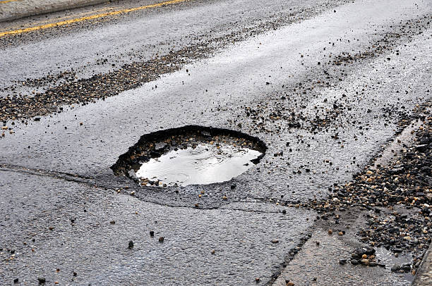
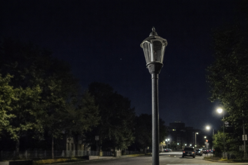
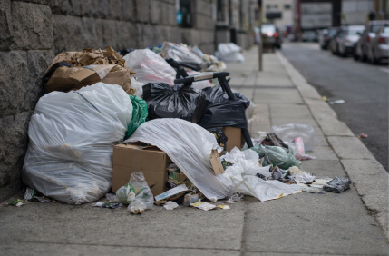
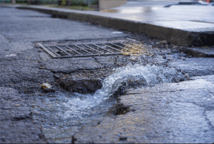

Tire uma foto do problema, descreva o que está acontecendo e informe o local. Sua solicitação será registrada para análise e possível solução.

Buraco de tamanho considerável no asfalto, acumulando água e oferecendo risco para veículos e motociclistas.

Poste de luz apagado, deixando a via escura e aumentando a sensação de insegurança.

Lixo acumulado na calçada, causando mau cheiro e prejudicando a limpeza urbana.

Vazamento na via pública, desperdiçando água e danificando o pavimento.